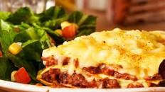

los espaguetis El trigo duro es un ingrediente indispensable y versátil de la cocina regional italiana , como lo demuestran recetas famosas tanto en Italia como en el resto del mundo, como los espaguetis a la carbonara, los espaguetis con ajo, el aceite y el ají, los espaguetis con queso y pimienta o los espaguetis con salsa de tomate intemporales. De esta pasta, que se presta bien a una amplia variedad de salsas y condimentos, actualmente hay alrededor de 200 variaciones, incluidos formatos más gruesos, más delgados o redondeados
estas son algunas recetas que puedes hacer con spaghetti